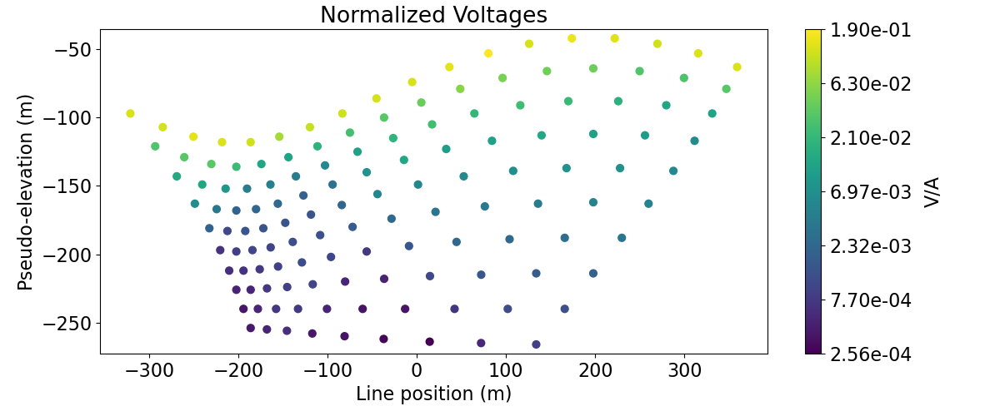
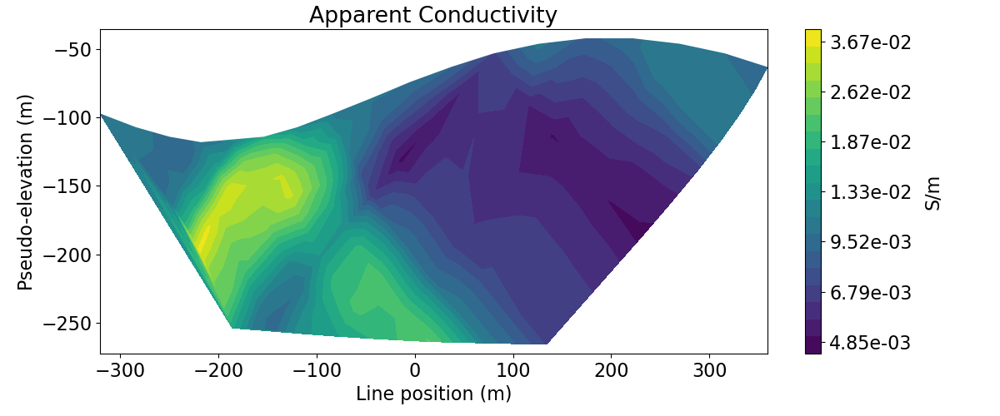

Note
Click here to download the full example code
2.5D Forward Simulation of a DCIP Line#
Here we use the module SimPEG.electromagnetics.static.resistivity to predict DC resistivity data and the module SimPEG.electromagnetics.static.induced_polarization to predict IP data for a dipole-dipole survey. In this tutorial, we focus on the following:
How to define the survey
How to define the problem
How to predict DC resistivity data for a synthetic resistivity model
How to predict IP data for a synthetic chargeability model
How to include surface topography
The units of the models and resulting data
This tutorial is split into two parts. First we create a resistivity model and predict DC resistivity data as measured voltages. Next we create a chargeability model and a background conductivity model to compute IP data defined as secondary potentials. We show how DC and IP in units of Volts can be plotted on pseudo-sections as apparent conductivities and apparent chargeabilities.
Import modules#
from discretize import TreeMesh
from discretize.utils import mkvc, refine_tree_xyz
from SimPEG.utils import model_builder, surface2ind_topo
from SimPEG.utils.io_utils.io_utils_electromagnetics import write_dcip2d_ubc
from SimPEG import maps, data
from SimPEG.electromagnetics.static import resistivity as dc
from SimPEG.electromagnetics.static import induced_polarization as ip
from SimPEG.electromagnetics.static.utils.static_utils import (
generate_dcip_sources_line,
plot_pseudosection,
apparent_resistivity_from_voltage,
)
import os
import numpy as np
import matplotlib as mpl
import matplotlib.pyplot as plt
from matplotlib.colors import LogNorm
try:
from pymatsolver import Pardiso as Solver
except ImportError:
from SimPEG import SolverLU as Solver
mpl.rcParams.update({"font.size": 16})
write_output = False
# sphinx_gallery_thumbnail_number = 5
Defining Topography#
Here we define surface topography as an (N, 3) numpy array. Topography could also be loaded from a file. In our case, our survey takes place within a set of valleys that run North-South.
x_topo, y_topo = np.meshgrid(
np.linspace(-3000, 3000, 601), np.linspace(-3000, 3000, 101)
)
z_topo = 40.0 * np.sin(2 * np.pi * x_topo / 800) - 40.0
x_topo, y_topo, z_topo = mkvc(x_topo), mkvc(y_topo), mkvc(z_topo)
topo_xyz = np.c_[x_topo, y_topo, z_topo]
# Create 2D topography. Since our 3D topography only changes in the x direction,
# it is easy to define the 2D topography projected along the survey line. For
# arbitrary topography and for an arbitrary survey orientation, the user must
# define the 2D topography along the survey line.
topo_2d = np.unique(topo_xyz[:, [0, 2]], axis=0)
Create Dipole-Dipole Survey#
Here we define a single EW survey line that uses a dipole-dipole configuration. For the source, we must define the AB electrode locations. For the receivers we must define the MN electrode locations. Instead of creating the survey from scratch (see 1D example), we will use the generat_dcip_survey_line utility.
# Define survey line parameters
survey_type = "dipole-dipole"
dimension_type = "2D"
dc_data_type = "volt"
end_locations = np.r_[-400.0, 400.0]
station_separation = 40.0
num_rx_per_src = 10
# Generate source list for DC survey line
source_list = generate_dcip_sources_line(
survey_type,
dc_data_type,
dimension_type,
end_locations,
topo_xyz,
num_rx_per_src,
station_separation,
)
# Define survey
dc_survey = dc.survey.Survey(source_list)
Create OcTree Mesh#
Here, we create the OcTree mesh that will be used to predict both DC resistivity and IP data.
dh = 4 # base cell width
dom_width_x = 3200.0 # domain width x
dom_width_z = 2400.0 # domain width z
nbcx = 2 ** int(np.round(np.log(dom_width_x / dh) / np.log(2.0))) # num. base cells x
nbcz = 2 ** int(np.round(np.log(dom_width_z / dh) / np.log(2.0))) # num. base cells z
# Define the base mesh
hx = [(dh, nbcx)]
hz = [(dh, nbcz)]
mesh = TreeMesh([hx, hz], x0="CN")
# Mesh refinement based on topography
mesh = refine_tree_xyz(
mesh,
topo_xyz[:, [0, 2]],
octree_levels=[0, 0, 4, 4],
method="surface",
finalize=False,
)
# Mesh refinement near transmitters and receivers. First we need to obtain the
# set of unique electrode locations.
electrode_locations = np.c_[
dc_survey.locations_a,
dc_survey.locations_b,
dc_survey.locations_m,
dc_survey.locations_n,
]
unique_locations = np.unique(
np.reshape(electrode_locations, (4 * dc_survey.nD, 2)), axis=0
)
mesh = refine_tree_xyz(
mesh, unique_locations, octree_levels=[4, 4], method="radial", finalize=False
)
# Refine core mesh region
xp, zp = np.meshgrid([-600.0, 600.0], [-400.0, 0.0])
xyz = np.c_[mkvc(xp), mkvc(zp)]
mesh = refine_tree_xyz(
mesh, xyz, octree_levels=[0, 0, 2, 8], method="box", finalize=False
)
mesh.finalize()
/usr/share/miniconda/envs/test/lib/python3.7/site-packages/scipy/interpolate/interpolate.py:630: RuntimeWarning:
invalid value encountered in true_divide
Create Conductivity Model and Mapping for OcTree Mesh#
Here we define the conductivity model that will be used to predict DC resistivity data. The model consists of a conductive sphere and a resistive sphere within a moderately conductive background. Note that you can carry through this work flow with a resistivity model if desired.
# Define conductivity model in S/m (or resistivity model in Ohm m)
air_conductivity = 1e-8
background_conductivity = 1e-2
conductor_conductivity = 1e-1
resistor_conductivity = 1e-3
# Find active cells in forward modeling (cell below surface)
ind_active = surface2ind_topo(mesh, topo_xyz[:, [0, 2]])
# Define mapping from model to active cells
nC = int(ind_active.sum())
conductivity_map = maps.InjectActiveCells(mesh, ind_active, air_conductivity)
# Define model
conductivity_model = background_conductivity * np.ones(nC)
ind_conductor = model_builder.getIndicesSphere(np.r_[-120.0, -160.0], 60.0, mesh.gridCC)
ind_conductor = ind_conductor[ind_active]
conductivity_model[ind_conductor] = conductor_conductivity
ind_resistor = model_builder.getIndicesSphere(np.r_[120.0, -100.0], 60.0, mesh.gridCC)
ind_resistor = ind_resistor[ind_active]
conductivity_model[ind_resistor] = resistor_conductivity
# Plot Conductivity Model
fig = plt.figure(figsize=(9, 4))
plotting_map = maps.InjectActiveCells(mesh, ind_active, np.nan)
norm = LogNorm(vmin=1e-3, vmax=1e-1)
ax1 = fig.add_axes([0.14, 0.17, 0.68, 0.7])
mesh.plot_image(
plotting_map * conductivity_model, ax=ax1, grid=False, pcolor_opts={"norm": norm}
)
ax1.set_xlim(-600, 600)
ax1.set_ylim(-600, 0)
ax1.set_title("Conductivity Model")
ax1.set_xlabel("x (m)")
ax1.set_ylabel("z (m)")
ax2 = fig.add_axes([0.84, 0.17, 0.03, 0.7])
cbar = mpl.colorbar.ColorbarBase(ax2, norm=norm, orientation="vertical")
cbar.set_label(r"$\sigma$ (S/m)", rotation=270, labelpad=15, size=12)
plt.show()
Project Survey to Discretized Topography#
It is important that electrodes are not modeled as being in the air. Even if the electrodes are properly located along surface topography, they may lie above the discretized topography. This step is carried out to ensure all electrodes lie on the discretized surface.
dc_survey.drape_electrodes_on_topography(mesh, ind_active, option="top")
Predict DC Resistivity Data#
Here we predict DC resistivity data. If the keyword argument sigmaMap is defined, the simulation will expect a conductivity model. If the keyword argument rhoMap is defined, the simulation will expect a resistivity model.
dc_simulation = dc.Simulation2DNodal(
mesh, survey=dc_survey, sigmaMap=conductivity_map, solver=Solver
)
# Predict the data by running the simulation. The data are the raw voltage in
# units of volts.
dpred_dc = dc_simulation.dpred(conductivity_model)
Plotting DC Data in Pseudo-Section#
Here, we demonstrate how to plot 2D DC data in pseudo-section. First, we plot the voltages in pseudo-section as a scatter plot. This allows us to visualize the pseudo-sensitivity locations for our survey. Next, we plot the apparent conductivities in pseudo-section as a filled contour plot.
# Plot voltages pseudo-section
fig = plt.figure(figsize=(12, 5))
ax1 = fig.add_axes([0.1, 0.15, 0.75, 0.78])
plot_pseudosection(
dc_survey,
dpred_dc,
"scatter",
ax=ax1,
scale="log",
cbar_label="V/A",
scatter_opts={"cmap": mpl.cm.viridis},
)
ax1.set_title("Normalized Voltages")
plt.show()
# Get apparent conductivities from volts and survey geometry
apparent_conductivities = 1 / apparent_resistivity_from_voltage(dc_survey, dpred_dc)
# Plot apparent conductivity pseudo-section
fig = plt.figure(figsize=(12, 5))
ax1 = fig.add_axes([0.1, 0.15, 0.75, 0.78])
plot_pseudosection(
dc_survey,
apparent_conductivities,
"contourf",
ax=ax1,
scale="log",
cbar_label="S/m",
mask_topography=True,
contourf_opts={"levels": 20, "cmap": mpl.cm.viridis},
)
ax1.set_title("Apparent Conductivity")
plt.show()
- 
- 
Define IP Survey#
The geometry of the survey was defined earlier. We will define the IP data as apparent chargeability in V/V.
# Generate source list for IP survey line
ip_data_type = "apparent_chargeability"
source_list = generate_dcip_sources_line(
survey_type,
ip_data_type,
dimension_type,
end_locations,
topo_xyz,
num_rx_per_src,
station_separation,
)
# Define survey
ip_survey = ip.survey.Survey(source_list, survey_type=survey_type)
# Drape over discrete topography
ip_survey.drape_electrodes_on_topography(mesh, ind_active, option="top")
Create Chargeability Model and Mapping for OcTree Mesh#
Here we define the chargeability model that will be used to predict IP data. Here we assume that the conductive sphere is also chargeable but the resistive sphere is not. Here, the chargeability is defined as mV/V.
# Define chargeability model as intrinsic chargeability (V/V).
air_chargeability = 0.0
background_chargeability = 1e-6
sphere_chargeability = 1e-1
# Find active cells in forward modeling (cells below surface)
ind_active = surface2ind_topo(mesh, topo_xyz[:, [0, 2]])
# Define mapping from model to active cells
nC = int(ind_active.sum())
chargeability_map = maps.InjectActiveCells(mesh, ind_active, air_chargeability)
# Define chargeability model
chargeability_model = background_chargeability * np.ones(nC)
ind_chargeable = model_builder.getIndicesSphere(
np.r_[-120.0, -160.0], 60.0, mesh.gridCC
)
ind_chargeable = ind_chargeable[ind_active]
chargeability_model[ind_chargeable] = sphere_chargeability
# Plot Chargeability Model
fig = plt.figure(figsize=(9, 4))
ax1 = fig.add_axes([0.14, 0.17, 0.68, 0.7])
mesh.plot_image(
plotting_map * chargeability_model,
ax=ax1,
grid=False,
clim=(background_chargeability, sphere_chargeability),
pcolor_opts={"cmap": mpl.cm.plasma},
)
ax1.set_xlim(-600, 600)
ax1.set_ylim(-600, 0)
ax1.set_title("Intrinsic Chargeability")
ax1.set_xlabel("x (m)")
ax1.set_ylabel("z (m)")
ax2 = fig.add_axes([0.84, 0.17, 0.03, 0.7])
norm = mpl.colors.Normalize(vmin=background_chargeability, vmax=sphere_chargeability)
cbar = mpl.colorbar.ColorbarBase(
ax2, norm=norm, orientation="vertical", cmap=mpl.cm.plasma
)
cbar.set_label("Intrinsic Chargeability (V/V)", rotation=270, labelpad=15, size=12)
plt.show()
Predict IP Data#
Here we use a chargeability model and a background conductivity/resistivity model to predict IP data.
# We use the keyword argument *sigma* to define the background conductivity on
# the mesh. We could use the keyword argument *rho* to accomplish the same thing
# using a background resistivity model.
simulation_ip = ip.Simulation2DNodal(
mesh,
survey=ip_survey,
etaMap=chargeability_map,
sigma=conductivity_map * conductivity_model,
solver=Solver,
)
# Run forward simulation and predicted IP data. The data are the voltage (V)
dpred_ip = simulation_ip.dpred(chargeability_model)
Plot 2D IP Data in Pseudosection#
We want to plot apparent chargeability. To accomplish this, we must normalize the IP voltage by the DC voltage. This is then multiplied by 1000 so that our apparent chargeability is in units mV/V.
fig = plt.figure(figsize=(12, 11))
# Plot apparent conductivity
ax1 = fig.add_axes([0.1, 0.58, 0.7, 0.35])
cax1 = fig.add_axes([0.82, 0.58, 0.025, 0.35])
plot_pseudosection(
dc_survey,
apparent_conductivities,
"contourf",
ax=ax1,
cax=cax1,
scale="log",
cbar_label="S/m",
mask_topography=True,
contourf_opts={"levels": 20, "cmap": mpl.cm.viridis},
)
ax1.set_title("Apparent Conductivity")
# Plot apparent chargeability
ax2 = fig.add_axes([0.1, 0.08, 0.7, 0.35])
cax2 = fig.add_axes([0.82, 0.08, 0.025, 0.35])
plot_pseudosection(
ip_survey,
dpred_ip,
"contourf",
ax=ax2,
cax=cax2,
scale="linear",
cbar_label="V/V",
mask_topography=True,
contourf_opts={"levels": 20, "cmap": mpl.cm.plasma},
)
ax2.set_title("Apparent Chargeability (V/V)")
plt.show()
Write Outputs (Optional)#
if write_output:
dir_path = os.path.dirname(__file__).split(os.path.sep)
dir_path.extend(["outputs"])
dir_path = os.path.sep.join(dir_path) + os.path.sep
if not os.path.exists(dir_path):
os.mkdir(dir_path)
# Write topography
fname = dir_path + "topo_xyz.txt"
np.savetxt(fname, topo_xyz, fmt="%.4e")
# Add 5% Gaussian noise to each DC datum
np.random.seed(225)
std = 0.05 * np.abs(dpred_dc)
dc_noise = std * np.random.rand(len(dpred_dc))
dobs = dpred_dc + dc_noise
# Create a survey with the original electrode locations
# and not the shifted ones
# Generate source list for DC survey line
source_list = generate_dcip_sources_line(
survey_type,
dc_data_type,
dimension_type,
end_locations,
topo_xyz,
num_rx_per_src,
station_separation,
)
dc_survey_original = dc.survey.Survey(source_list)
# Write out data at their original electrode locations (not shifted)
data_obj = data.Data(dc_survey_original, dobs=dobs, standard_deviation=std)
fname = dir_path + "dc_data.obs"
write_dcip2d_ubc(fname, data_obj, "volt", "dobs")
# Add Gaussian noise equal to 5e-3 V/V
std = 5e-3 * np.ones_like(dpred_ip)
ip_noise = std * np.random.rand(len(dpred_ip))
dobs = dpred_ip + ip_noise
# Create a survey with the original electrode locations
# and not the shifted ones
# Generate source list for DC survey line
source_list = generate_dcip_sources_line(
survey_type,
ip_data_type,
dimension_type,
end_locations,
topo_xyz,
num_rx_per_src,
station_separation,
)
ip_survey_original = dc.survey.Survey(source_list)
# Write out data at their original electrode locations (not shifted)
data_obj = data.Data(ip_survey_original, dobs=dobs, standard_deviation=std)
fname = dir_path + "ip_data.obs"
write_dcip2d_ubc(fname, data_obj, "apparent_chargeability", "dobs")
Total running time of the script: ( 0 minutes 10.701 seconds)
Estimated memory usage: 19 MB